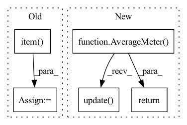

Pattern ID :31606

Before Change
hr = hr.to(config.device, non_blocking=True)
// Calculate the PSNR evaluation index.
sr = model(lr).clamp_(0.0, 1.0)
psnr = 10 * torch.log10(1 / criterion(sr, hr)).item()
total_psnr += psnr
avg_psnr = total_psnr / batches
// Write the value of each round of verification indicators into Tensorboard.
After Change
def validate(model, valid_dataloader, criterion, epoch, writer) -> float:
batch_time = AverageMeter("Time", ":6.3f")
losses = AverageMeter("Loss", ":6.6f")
psnres = AverageMeter("PSNR", ":4.2f")
progress = ProgressMeter(len(valid_dataloader), [batch_time, losses, psnres], prefix="Valid: ")
// Put the generator in verification mode.
model.eval()
with torch.no_grad():
end = time.time()
for index, (lr, hr) in enumerate(valid_dataloader):
lr = lr.to(config.device, non_blocking=True)
hr = hr.to(config.device, non_blocking=True)
// Mixed precision
with amp.autocast():
sr = model(lr)
loss = criterion(sr, hr)
// measure accuracy and record loss
psnr = 10. * torch.log10(1. / torch.mean((sr - hr) ** 2))
losses.update(loss.item(), lr.size(0))
psnres.update(psnr.item(), lr.size(0))
// measure elapsed time
batch_time.update(time.time() - end)
end = time.time()
if index % config.print_frequency == 0:
progress.display(index)
writer.add_scalar("Valid/PSNR", psnres.avg, epoch + 1)
// Print evaluation indicators.
print(f"* PSNR: {psnres.avg:4.2f}.\n")
return psnres.avg
class AverageMeter(object):
In pattern: SUPERPATTERN
Frequency: 3
Non-data size: 5
Instances
Fragment ID: 92260340
Project Name: lornatang/fsrcnn-pytorch
Commit Name: 43cfaf9e5af149c81b55f722658550dbbc5f6c88
Time: 2021-11-25
Author: liuchangyu1111@gmail.com
File Name: train.py
M Class Name: AnonimousClass
N Class Name: AnonimousClass
M Method Name: validate(5)
N Method Name: validate(5)
M Parent Class:
N Parent Class:
M File Name: train.py
N File Name: train.py
M Start Line: 112
M End Line: 133
N Start Line: 198
N End Line: 233
'>
Before Change
hr = hr.to(config.device, non_blocking=True)
// Calculate the PSNR evaluation index.
sr = model(lr).clamp_(0.0, 1.0)
psnr = 10 * torch.log10(1 / criterion(sr, hr)).item()
total_psnr += psnr
avg_psnr = total_psnr / batches
// Write the value of each round of verification indicators into Tensorboard.
After Change
def validate(model, valid_dataloader, criterion, epoch, writer) -> float:
batch_time = AverageMeter("Time", ":6.3f")
losses = AverageMeter("Loss", ":6.6f")
psnres = AverageMeter("PSNR", ":4.2f")
progress = ProgressMeter(len(valid_dataloader), [batch_time, losses, psnres], prefix="Valid: ")
// Put the generator in verification mode.
model.eval()
with torch.no_grad():
end = time.time()
for index, (lr, hr) in enumerate(valid_dataloader):
lr = lr.to(config.device, non_blocking=True)
hr = hr.to(config.device, non_blocking=True)
// Mixed precision
with amp.autocast():
sr = model(lr)
loss = criterion(sr, hr)
// measure accuracy and record loss
psnr = 10. * torch.log10(1. / torch.mean((sr - hr) ** 2))
losses.update(loss.item(), lr.size(0))
psnres.update(psnr.item(), lr.size(0))
// measure elapsed time
batch_time.update(time.time() - end)
end = time.time()
if index % config.print_frequency == 0:
progress.display(index)
writer.add_scalar("Valid/PSNR", psnres.avg, epoch + 1)
// Print evaluation indicators.
print(f"* PSNR: {psnres.avg:4.2f}.\n")
return psnres.avg
class AverageMeter(object):
'>
Fragment ID: 92260339
Project Name: lornatang/espcn-pytorch
Commit Name: 3d7da32ace2da2b908bad2a32243b464f206e72a
Time: 2021-11-30
Author: liuchangyu1111@gmail.com
File Name: train.py
M Class Name: AnonimousClass
N Class Name: AnonimousClass
M Method Name: validate(5)
N Method Name: validate(5)
M Parent Class:
N Parent Class:
M File Name: train.py
N File Name: train.py
M Start Line: 122
M End Line: 143
N Start Line: 207
N End Line: 242
'>
Before Change
blur_map = blur(blur_map).unsqueeze(0)
loss = loss_func(blur_map, gt, fixations, args)
total_loss += loss.item()
print("[{:2d}, val] avg_loss : {:.5f}, time:{:3f} minutes".format(epoch, total_loss/len(loader), (time.time()-tic)/60))
sys.stdout.flush()
After Change
model.eval()
tic = time.time()
total_loss = 0.0
cc_loss = AverageMeter()
kldiv_loss = AverageMeter()
nss_loss = AverageMeter()
sim_loss = AverageMeter()
for (img, gt, fixations) in loader:
img = img.to(device)
gt = gt.to(device)
fixations = fixations.to(device)
pred_map = model(img)
// Blurring
blur_map = pred_map.cpu().squeeze(0).clone().numpy()
blur_map = blur(blur_map).to(device)
cc_loss.update(cc(blur_map, gt))
kldiv_loss.update(kldiv(blur_map, gt))
nss_loss.update(nss(blur_map, gt))
sim_loss.update(similarity(blur_map, gt))
print("[{:2d}, val] CC : {:.5f}, KLDIV : {:.5f}, NSS : {:.5f}, SIM : {:.5f} time:{:3f} minutes".format(epoch, cc_loss.avg, kldiv_loss.avg, nss_loss.avg, sim_loss.avg, (time.time()-tic)/60))
sys.stdout.flush()
return cc_loss.avg
params = list(filter(lambda p: p.requires_grad, model.parameters()))
'>
Fragment ID: 92260338
Project Name: samyak0210/saliency
Commit Name: a1ee71d9be4c2e9e04aa20699f154e751e067e11
Time: 2020-02-29
Author: smkjain8@gmail.com
File Name: main.py
M Class Name: AnonimousClass
N Class Name: AnonimousClass
M Method Name: validate(5)
N Method Name: validate(5)
M Parent Class:
N Parent Class:
M File Name: main.py
N File Name: main.py
M Start Line: 159
M End Line: 177
N Start Line: 159
N End Line: 183